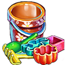
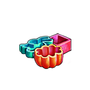
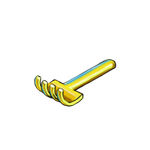
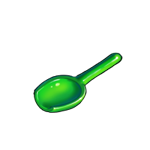
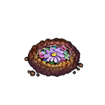
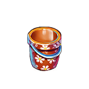

Получено: файл; исходный URL. Иллюстрация в отдельной статье ViveR_9 «Песочная коллекция»; исходный файл без перекодирования. Авторство отдельно не установлено. Страница: источник.

Песочная коллекция
Браузерная социальная версия; историческая статья; дата редакции неизвестна- Тип
- Коллекции
- Версия и дата
- Браузерная социальная версия; историческая статья; дата редакции неизвестна
Элементы коллекции















Данные по источнику · Браузерная социальная версия · историческая статья; дата редакции неизвестна
Предварительно: один материал, требуется сверка. Требуется сверка.
- Состав (источник Zombie-island)
- Формочки; Грабельки; Лопатка; Секрет; Цветочное ведёрко.
- Награда (источник Zombie-island)
- 1 Палочки; 1 Фантик.
- Песочную коллекцию можно найти в ценностях и сокровищах
- Коллекционер 2; Веселая карусель.
- Где копать Песочную коллекцию в Зомби Ферме лопатами
- Песочница; Ведерко; Стена; Окно; Двери; Крыша; Крыша без окна; Крыша с трубой; Мачта; Купол; Зонтик; Зонтик 2; Ограда; Трава; Уточка; Водичка; Фигура 1; Фигура 2; Фигура 3; Фигура 4; Фигура 5; Фигура 6; Фигура 7; Фигура 8; Фигура 9; Фигура 10; Фигура 11; Фигура 12; Фигура 13; Фигура 14; Шкатулка; Розовый купол; Этаж 1; Этаж 2; Этаж 3; Этаж 4; Этаж 5; Этаж 6; Этаж 7; Пчелка; Пиратское; Простое; Королевское; Лиловое; Дорогое; Футбольное; Рыцарское; Новое корыто; Новая изба; Зомби Русалка; Белоснежная яхта; Старое корыто; Паровоз; Перрон; Рельсы; Семафор; Вагон.
- Песочная коллекция попадается при колдовании Палочками
- Палочка-выручалочка.
Данные по источнику · браузерная версия; платформа не указана · дата редакции не установлена
Предварительно: Содержимое списка: изображения и колонки могут терять смысл при извлечении текста; отдельная страница и дата не проверены. Подписи alt иногда ошибочны.. Требуется сверка.
- Текст карточки из каталога
- 1 Палочки и 1 Фантик Формочки Грабельки Лопатка Секрет Цветочное ведёрко Где хорошо копается Песочная коллекция: Недостроенное ведёрко Алмазная девочка Чёрный ящик Под всеми песочными декорациями
Данные по источнику · Историческая браузерная версия ВКонтакте; редакция неизвестна · дата публикации и последующей редакции не проверена
Предварительно: Фанатский справочник, возможна зависимость от других источников; вероятность находки не указана, актуальность не установлена.. Требуется сверка.
- Состав
- Формочки, Грабельки, Лопатка, Секрет, Цветочное ведёрко.
- Обмен
- 1 Фантик и 1 Палочки; источник не называет награду палочкой-выручалочкой.
- Получение
- При вскрытии Драгоценного цветка (два варианта), Пятнистого, Подарка и Коллекционера 2.
- Палочки
- Октавий, «Осторожно — дикий зверь!», Пончик-победитель.
- Лопаты у друзей
- Ведёрко, Купол, Чёртовы ворота, Новая изба, Зомби Русалка, Песочница, Белоснежная яхта, Новое Корыто, Старое корыто; также перечислены многочисленные элементы песочного декора.
- Применение
- Идол Земли; задания «Ещё один Неконец», «Алмазная девочка», «Диего в пустыне», «Сомнения», «Удачи!», «В песочнице», «Основательный подход». Одноимённые задания в базе не обязательно совпадают.
Связанные сущности
нет проверенных связей — требуется сверка.